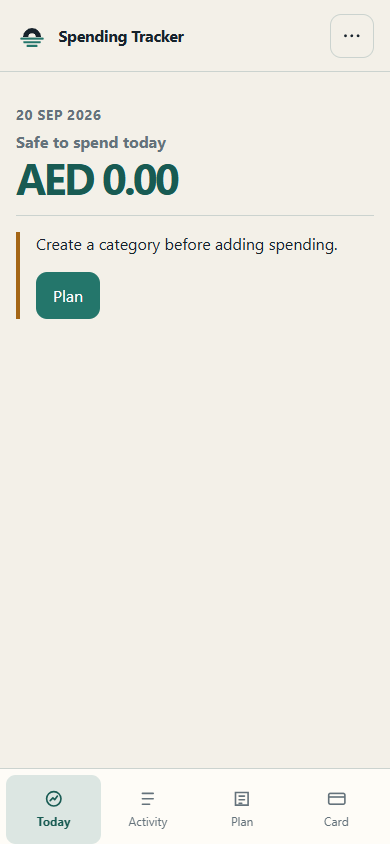

Private by default · ready offline
Know what is safe to spend today.
A calm daily spending companion for your iPhone. No account, no server, no ads—just your plan and your records on your device.
- Works after the first visit without internet
- English and Arabic, including right-to-left layout
- Portable JSON backups and CSV exports

Local-firstYour data stays on this device
Offline-readyInstallable from Safari
PortableYou own the backup file
Install on iPhone
Your tracker, one tap away.
Open the app in Safari, tap Share, then choose Add to Home Screen. Launch it once while online so the offline copy is ready.
- 1Open in Safari
Use the Launch button above on your iPhone.
- 2Tap Share
Find the square-with-arrow button in Safari.
- 3Add to Home Screen
Confirm the name and tap Add.
A deliberate privacy trade-off
No cloud means no silent recovery.
Clearing Safari website data or removing the app can erase local records. Create a JSON backup regularly and keep it somewhere you trust.